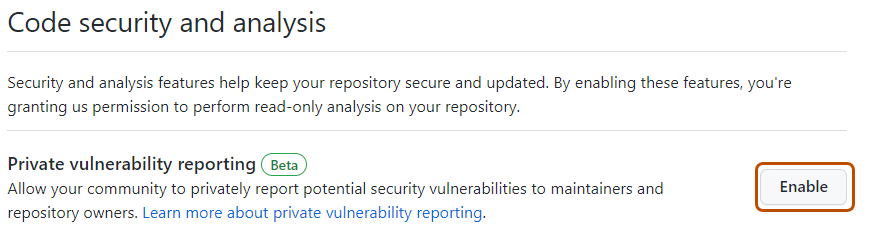
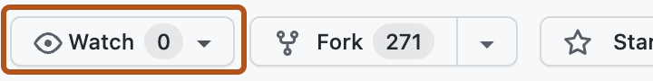

Configuring private vulnerability reporting for a repository
Owners and administrators of public repositories can allow security researchers to report vulnerabilities securely in the repository by enabling private vulnerability reporting.
Enabling private vulnerability reporting gives security researchers a secure, structured way to disclose vulnerabilities directly in your repository. Once enabled, researchers can submit reports through without resorting to public disclosure or informal channels. For background on private vulnerability reporting and how it fits into coordinated disclosure, see About coordinated disclosure of security vulnerabilities.
Enabling or disabling private vulnerability reporting for a repository
On GitHub, navigate to the main page of the repository.
Under your repository name, click Settings. If you cannot see the "Settings" tab, select the dropdown menu, then click Settings.
In the "Security" section of the sidebar, click Advanced Security.
Under "Advanced Security", to the right of "Private vulnerability reporting", click Enable or Disable, to enable or disable the feature, respectively.

When private vulnerability reporting is enabled, security researchers see a Report a vulnerability button on the repository’s "Advisories" page, which allows them to submit a private report.
Configuring notifications for private vulnerability reporting
When a new vulnerability is privately reported in a repository, GitHub notifies repository administrators and security managers if:
They're watching the repository for all activity or are subscribed to “Security alerts” notifications.
They have notifications enabled for the repository.
Notifications depend on the user's notification preferences. You will receive an email notification if:
You are watching the repository with All Activity selected, or with Security alerts (available under Custom) selected.
In your notification settings, under Subscriptions, then under Watching, you have selected to receive notifications by email.
On GitHub, navigate to the main page of the repository.
To start watching the repository, select Watch.

In the dropdown menu, select All Activity to receive notifications for all activity, or select Custom, then Security alerts to receive notifications only for security alerts.